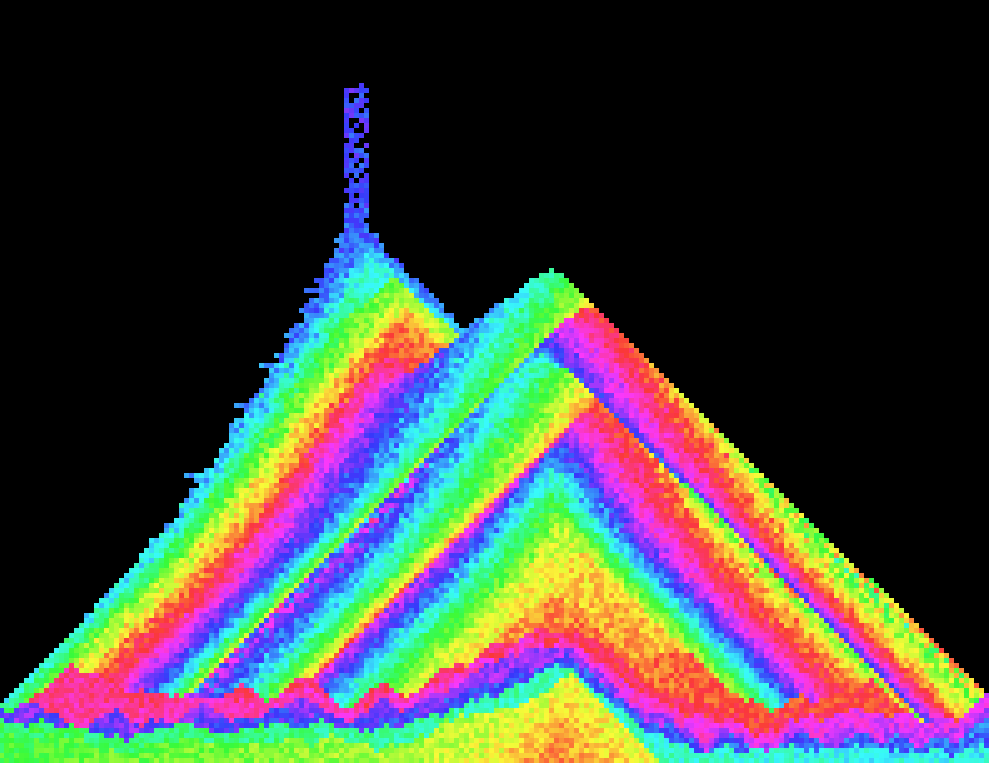
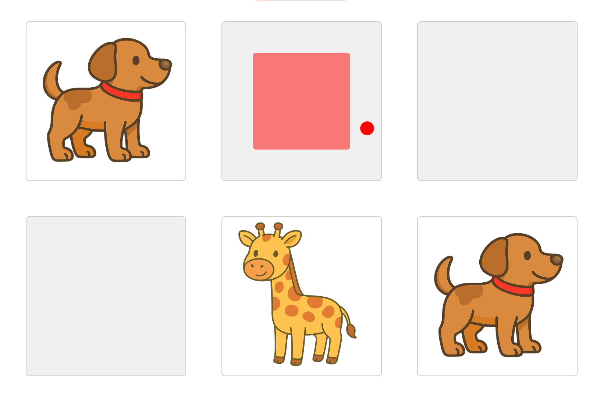

Ce texte s’inspire notamment du travail et des expérimentations documentées sur le blog de Isamu Fukushima, https://sam-eatlab.blog.jp/, où l’on peut observer de nombreux utilisateurs employant des caméras de contrôle oculaire du type de celles abordées ici, dans des contextes variés et souvent hors des circuits traditionnels des technologies d’assistance.
À notre connaissance, il n’existe pas de texte de synthèse clair et structuré décrivant précisément le processus présenté ci-dessous. Il est toutefois possible que des démarches similaires aient déjà été documentées ailleurs, sous d’autres formes ou dans d’autres communautés.
Un appareil de contrôle oculaire, soit uniquement la caméra sans l’ordinateur ni les accessoires, coûte généralement autour de 3 000 $ au Canada. La majorité des achats est financée par divers programmes gouvernementaux, avec des conditions relativement strictes et l’accès à des professionnels comme condition sine qua non. Dans les autres pays anglo-saxons, selon nos connaissances actuelles, les coûts et les barrières à l’utilisation sont comparables.
Plusieurs raisons expliquent ce prix somme toute élevé, compte tenu des pièces utilisées et du niveau de technologie requis pour la conception d’un tel appareil. Du côté plus compréhensible, il s’agit d’équipements devant passer des contrôles de qualité importants et être certifiés par plusieurs agences gouvernementales, dans des juridictions variées. De plus, la demande demeure relativement faible; l’économie d’échelle est donc limitée.
D’autres facteurs peuvent également entrer en ligne de compte. Par exemple, puisque ce sont principalement les assurances et les gouvernements qui assument les coûts, les entreprises peuvent ajuster leurs prix en fonction de ce que ces entités sont prêtes à payer. Cela a pour effet d’exclure les consommateurs individuels ou les organisations n’ayant pas accès aux structures de financement, comme certaines écoles, familles ou organismes communautaires. La concurrence est limitée, et les écosystèmes peuvent être relativement fermés, ce qui crée une dépendance chez les utilisateurs.
Dans ce contexte, il est possible de formuler une critique plus large de la commodification des caractéristiques associées aux situations de handicap. Sans nier les coûts réels de développement, de certification et de soutien, certaines capacités humaines essentielles, comme la possibilité de communiquer ou d’interagir avec un environnement numérique, deviennent des produits fortement segmentés, protégés et monétisés. Cette logique s’inscrit dans un cadre capitaliste où l’accès est souvent conditionné par la capacité de payer ou par l’admissibilité à des programmes spécifiques. Une telle dynamique peut entrer en tension avec une vision plus inclusive des technologies d’assistance, où celles-ci sont envisagées comme des outils d’émancipation, de participation sociale et de justice sociale, plutôt que comme des biens spécialisés réservés à des marchés étroits.
Ces enjeux ont des conséquences particulièrement importantes pour les personnes polyhandicapées. Pour plusieurs d’entre elles, le contrôle oculaire représente parfois l’unique modalité d’interaction possible avec un environnement numérique. L’accès à ce type de technologie permet non seulement la communication, mais aussi l’exploration sensorielle, l’engagement visuel, la participation à des activités éducatives adaptées et, plus largement, une forme d’agentivité sur leur environnement. Dans la pratique, plusieurs personnes polyhandicapées ne répondent pas toujours à l’ensemble des critères exigés pour l’obtention d’un appareil, par exemple la capacité à produire des messages « fonctionnels » ou à l’utiliser de manière autonome. Pourtant, elles peuvent bénéficier de façon significative d’un accès au contrôle oculaire pour des activités de loisir, de stimulation, d’apprentissage et de participation, même lorsque l’objectif n’est pas uniquement la communication.
Il est important de préciser que l’approche décrite ci-dessous ne vise pas à contourner les programmes de financement existants ni à remplacer des aides techniques prescrites. Elle a plutôt pour objectif de permettre l’exploration, l’expérimentation et l’accès minimal à des usages de base du contrôle oculaire lorsque les solutions conventionnelles sont inaccessibles, inexistantes ou impossibles à obtenir à court terme.
Il existe toutefois une alternative intéressante pour une organisation ou une personne n’ayant pas le privilège ou la possibilité d’accéder à ces technologies. La compagnie Tobii, très présente dans le domaine des technologies d’assistance, offre également des produits destinés au marché du jeu vidéo. Il s’agit notamment des caméras Tobii 4C et Tobii 5.
Dans certains jeux, ces caméras permettent une immersion accrue. Par exemple, dans un simulateur de vol, l’utilisateur peut regarder naturellement dans une direction, ce qui influence la caméra du jeu.
Tobii ne publie pas ouvertement l’ensemble des informations techniques concernant ses appareils. Toutefois, la principale caméra de sa gamme AAC, le PCEye, est basée sur la plateforme IS5, qui est également utilisée par le Tobii 5. Cela signifie que le matériel est en grande partie identique. Il peut exister certaines améliorations du côté du PCEye 5, notamment en matière de captation dans des conditions lumineuses difficiles, par exemple à l’extérieur avec des reflets du soleil, mais le fonctionnement de base demeure sensiblement le même.
La différence majeure réside au niveau du logiciel. Le modèle dit « gaming », vendu environ cinq à six fois moins cher, soit environ 500 $ neuf et entre 150 $ et 300 $ usagé sur Marketplace ou eBay, n’a pas accès au contrôle natif de Windows. Celui-ci est bloqué, tout comme l’accès direct aux logiciels AAC courants tels que Grid ou TD Snap. Cette segmentation logicielle oriente clairement les acheteurs vers les modèles AAC.
Il existe toutefois plusieurs options simples et rapides permettant d’utiliser le contrôle oculaire afin de déplacer la souris dans un navigateur web ou dans d’autres applications. Cela rend ces caméras compatibles avec une grande majorité des activités conçues pour des personnes ayant des besoins complexes, par exemple les activités de Ian Bean, HelpKidzLearn ou ce site. Il existe aussi Miyasuku, un logiciel japonais dont l’accès et la documentation peuvent être plus difficiles pour les personnes à l’extérieur du Japon, mais qui peut être une option intéressante pour des utilisateurs japonophones. De plus, ce type d’appareil est compatible avec la majorité des ordinateurs portables, sans nécessité d’achats complémentaires pour en faire l’essai.
Ce guide n’entre pas dans les détails fins de configuration. Le processus est relativement simple et, au besoin, des explications plus détaillées ou une vidéo pourraient être ajoutées ultérieurement.
Il existe plusieurs options de fixation pour positionner l’appareil. Toutefois, pour les tests et pour de nombreux usages, il suffit de placer la caméra sur un ordinateur portable, sous l’écran, à l’aide de l’aimant fourni.
Pour les tests, un Tobii 4C a été utilisé. Le Tobii 5, plus récent, devrait être tout aussi simple à configurer. À noter qu’un PC EyeX, un modèle beaucoup plus ancien, a également été testé, mais qu’il ne s’est pas révélé suffisamment fiable pour cette utilisation.
L’enjeu principal est double. Il faut d’abord faire reconnaître correctement l’appareil par l’ordinateur. Il faut ensuite permettre l’émulation de la souris, une fonction volontairement bloquée par Tobii afin d’orienter les utilisateurs vers les modèles AAC.
Afin que l’ordinateur reconnaisse l’appareil, il faut d’abord suivre la même procédure que pour un usage gaming. Il faut se rendre sur https://gaming.tobii.com/getstarted/ et télécharger le logiciel correspondant. Pour le Tobii 4C, sous Windows 11, il faut choisir Tobii Experience.
Une fois le logiciel installé, il faut initialiser la caméra en suivant les étapes à l’écran. Aucune instruction particulière n’est nécessaire. Il est ensuite possible de vérifier que tout fonctionne correctement directement dans le logiciel Tobii.
Il faut maintenant choisir un logiciel permettant d’utiliser la caméra pour déplacer la souris. Plusieurs options existent, notamment Mill Mouse ou OptiKey. Toutefois, ces solutions déplacent la souris par téléportation; le curseur disparaît puis réapparaît directement à l’endroit regardé.
Ce fonctionnement est non seulement déroutant sur le plan cognitif, mais il est également nuisible pour tout ce qui implique des effets visuels ou des interactions progressives. Pour de nombreuses activités destinées à des jeunes polyhandicapés, où l’intérêt repose sur le mouvement visible, la continuité, la relation cause-effet ou le suivi visuel, cette téléportation réduit fortement l’intérêt pédagogique et sensoriel. Elle limite aussi la possibilité de créer des environnements visuellement engageants et prévisibles.
Après plusieurs essais, le seul logiciel permettant un mouvement plus naturel, où le curseur se déplace de manière continue comme avec une souris classique, est Talon Voice. Il s’agit d’un logiciel open source, soutenu par une grande communauté de développeurs et d’utilisateurs. Il est très puissant et permet une multitude d’interactions adaptées, notamment via des commandes vocales. C’est un outil encore peu connu dans le milieu de l’adaptation, mais qui mérite clairement davantage de visibilité.
Une fois Tobii Experience installé et activé, il est nécessaire de désactiver ses processus, car ceux-ci empêchent Talon d’accéder à la caméra pour le contrôle de la souris.
Il est possible de désinstaller le programme via le menu des applications. Toutefois, certains processus demeurent actifs. Pour les désactiver, il faut appuyer sur WIN + R et entrer services.msc. Il faut ensuite rechercher tous les services associés à Tobii, généralement deux ou trois. Pour chacun, il faut double-cliquer, arrêter le service et sélectionner Manuel comme type de démarrage. Cela empêche ces services de redémarrer automatiquement lors d’un redémarrage de l’ordinateur.
Pour installer Talon sous Windows, il faut télécharger l’installateur depuis le site officiel de Talon Voice, puis lancer le fichier et suivre les étapes en acceptant les options par défaut.
Une fois l’installation terminée, Talon peut être démarré. Une icône apparaît alors dans la zone de notification, en bas à droite. À ce stade, l’option de contrôle oculaire apparaît en grisé, ce qui est normal.
Pour que Talon fonctionne correctement, il est indispensable d’importer les scripts de la communauté. Après avoir lancé Talon, il faut ouvrir le dossier Talon Home via l’icône, puis créer un dossier nommé user s’il n’existe pas déjà. Il faut ensuite télécharger le repo talonhub/community depuis GitHub et copier son contenu dans le dossier user. Le téléchargement direct est possible, mais le clonage via git demeure la méthode la plus simple.
Après avoir redémarré Talon, les scripts de souris, de clavier, de suivi du regard et les commandes vocales deviennent actifs automatiquement. Le guide officiel est disponible ici: https://talon.wiki/Resource%20Hub/Talon%20Installation/installation_guide/
Dès que Talon est actif, manuellement ou au démarrage de l’ordinateur, le contrôle oculaire fonctionne et permet de déplacer la souris sous Windows à l’aide du regard.
En suivant le même processus, il est également possible de faire fonctionner l’appareil sous Linux. Il est important d’utiliser une distribution fonctionnant avec l’interface X11 plutôt que Wayland pour des raisons de compatibilité. Linux Mint a été testé avec succès et la caméra fonctionne très bien.
Cette option est particulièrement intéressante, puisqu’il s’agit d’un système open source. À mesure que de grandes entreprises technologiques, telles que Microsoft ou Google, adoptent des pratiques perçues comme anti-consommateurs ou exploitatrices, le développement et l’exploration d’alternatives ouvertes permettent de redonner du contrôle aux utilisateurs. Dans le cas des technologies d’assistance, cela revêt une importance particulière, car il s’agit de limiter la dépendance à des écosystèmes propriétaires et de favoriser l’accès des personnes les plus vulnérables à des activités, des outils et des formes de divertissement numériques. Il est donc encouragé d’explorer cette possibilité.